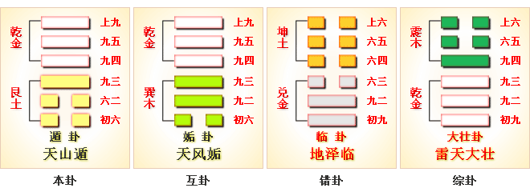
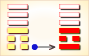
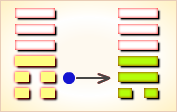
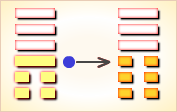
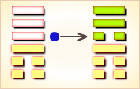
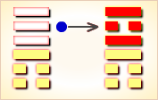
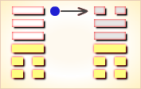

遯（dùn）卦代号是1:7。“遯”（dùn），又写作遁，逃避，躲闪：遁去。
遯卦的主卦是1卦艮卦，卦象是山，特性是静止和阻止，阳数是1；客卦是7卦乾卦，卦象是天，特性是有力和运动，阳数是7。
在强大客方的压力下，主方应当逃循，在逃循中与客方灵活周旋，伺机夺取利益。
图中，红色表示当位的爻，天蓝色表示不当位的爻，箭头表示有应。
图中显示，遯卦中有两个箭头，表示主卦与客卦之间有两对有应关系。
一个有应关系是主客双方的行动，又可以看到，箭头两端的爻都是灰色的爻，表示这两条爻都不当位。 有应而不当位，表示这是真正的对主方不利的因素，主方失去了主动，应当逃循。
另一个有应关系是主客双方的素质，又可以看到，箭头两端的爻都是黑色，表示这两条爻都当位。有应而又当位，这是对主方真正的有利因素。 综合说来，主方应当在逃循过程中，以灵活的策略，从客方的良好素质获利。
剩下的一对爻，第三爻和第六爻，没有有应关系，很难说对主方有利还是不利，关键在于主方如何处理。再进一步分析这两条爻。
第三爻是主卦的上爻，是对主卦的中爻的补充。主卦的中爻是阴爻，这第三爻是阳爻，表示，虽然主方的素质不佳，但不是很差，就是说，主方还有一点力量，尽管力量很小，也还是有一点。主方应当用这一点微小的力量与对方周旋，在逃循中获益。
第六爻是客卦的上爻，是对客卦中爻的补充，阳爻，表示客方的素质不仅良好，而且很好，客方的实力不仅很大，而且极大。在这种情况下，主方不宜与客方硬拼，而应当在逃循中与客方灵活周旋，伺机夺取利益。
遯卦的六条爻辞阐述了逃循时的多方面的考虑。逃循并不是一走了事，而是有许多方面必须考虑。
第一爻指出了逃循必须抓紧时间，“遯尾，厉”； 第二爻指出，逃循不能把客方丢了，“执之用黄牛之革”； 第三爻指出，逃循时须要保持各部门之间的联系，“系遯”； 第四爻指出，逃循时需要有能干的指挥，“好遯”； 第五爻指出，逃循是应当赞许的，“嘉遯”； 第六爻指出，逃循时不能丢三落四，“肥遯”。
删去部分判断辞，可以看出六条爻辞就是一首完整的围绕主题“遯”的散文诗。下面是其译文：
逃遁迟了成了尾巴，
形势将很困难，不要做其它事情。
（逃循的时候）用黄牛之革捆住对方牵着走，
不要丢了他。
逃遁的时候，要维持内部联系，有错误就难办；
保留臣子与妾有好处。
逃遁得好，形势有利于英明、勇敢的人，
而不利于愚昧、怯弱的人。
逃遁值得嘉奖，坚持下去吉利。
逃遁得肥肥的，没有不利。
卦辞则阐述在当前形势下主方应有的作法。下面逐条说明卦爻辞。
经文：遯：亨小，利贞。
注释：遯（dùn）：卦名。
又作“遁”。帛《易》作“掾”。
古人多解作逃避、隐退。
然初六爻曰“遯尾”，六二爻称“执之”，
九三爻有“系遯”，
九四、九五、上九爻又有“好遯”、“嘉遯”、“肥遯”之辞，
由此而考之，卦中“遯”字之义，恐如高亨先生所解，
“遯”乃“豚”，谓小猪。
亨小，利贞：少有亨通，宜于占问。
朱熹《周易本义》曰：“遁”，退避也。
为卦二阴浸长，阳当退避，故为遁。
上九：肥遯，无不利。
注释：小猪被养肥，（利于作祭品）。
朱熹《周易本义》曰：
以刚阳居卦外，下无系应，
遁之远而处之俗者也，故其象占如此。
九五：嘉遯，贞吉。
注释：小猪受到赞美，占问则吉利。嘉，赞美。
朱熹《周易本义》曰：
阳刚中正，下应六二，
亦柔顺而中正，遁之嘉美者也。占者如是而正则吉也。
九四：好遯，君子吉，小人否。
注释：小猪惹人喜爱，君子吉利，小人不吉利。好，喜爱。
朱熹《周易本义》曰：
下应初六，而乾体刚健，有所好而能绝之，以遁之象也。
惟自克之君子能之，而小人不能。
故占者君子则吉，而小人否也。
九三：系遯，有疾厉；畜臣妾，吉。
注释：系遯，有疾厉：捆绑小猪，使（小猪）有疾病而危厉。
畜臣妾：畜养奴隶。古者称男奴隶为臣，女奴隶为妾。
朱熹《周易本义》曰：
下比二阴，当遁而有所系之象，
有“疾”而“危”之道也。然以“畜臣妾”则“吉”。
盖君子之于小人，为“臣妾”则不必其贤而可“畜”耳，
故其占如此。
六二：执之用黄牛之革，莫之胜说。
注释：用黄牛皮捆缚它，不能挣脱。
执，缚。革，皮。说，脱。
朱熹《周易本义》曰：
以中顺自守，人莫能戒，必遁之志也。
占者固守，亦当如是。
初六：尾，厉，勿用有攸往。
注释：遯尾，厉：猪尾有被割断之险。
朱熹《周易本义》曰：
遁而在后，“尾”之象，危之道也。
占者不可以有所往，但晦处静俟，可免灾耳。
这个卦是异卦（下艮上乾）相叠。乾为天，艮为山。天下有山，山高天退。阴长阳消，小人得势，君子退隐，明哲保身，伺机救天下。
上九：肥遁，无不利。 《象》曰：肥遁，无不利，无所疑也。
九五：嘉遁，贞吉。 《象》曰：嘉遁，贞吉，以正志也。
九四：好遁，君子吉，小人否。 《象》曰：君子好遁，小人否也。
九三：系遁，有疾，厉。畜臣妾，吉。 《象》曰：系遁，厉，有疾惫也。畜臣妾，吉，不可大事也。
六二：执之用黄牛之革，莫之胜说。 《象》曰：执用黄牛，固志也。
初六：遁尾，厉。勿用有攸往。 《象》曰：遁尾之厉，不往何灾也?
《象》曰：浓云蔽日不光明，劝君且莫出远行，婚姻求财皆不利，提防口舌到门庭。
这个卦是异卦（下艮上乾）相叠。乾为天，艮为山。天下有山，山高天退。阴长阳消，小人得势，君子退隐，明哲保身，伺机救天下。事业：时运不佳，应考虑退隐，勿与不正派的人同流合污。但不是消极逃避，而是为保存实力，总结经验，把握时机，待机而出。切忌贸然行事，造成不必要的损失。同时勿为眼前小利禄所诱惑。
遯卦阐释的是隐遁、退避的道理。极端地恒久，必然要引起动荡不安，而小人的势力就会乘动荡之时形成并扩大。在动荡之时，往往也是政治腐败，法制混乱的时期，这时对正直纯洁的君子则是不利的。作为君子就应当把隐忍退避作为明哲保身的正当手段，以等待最有利的时机再进行行动。在这里，作为君子应当觉悟和明白，当小人道长，君子道消的时期来临时，选择对抗、抗争是徒劳的，无益的，只能给自己造成伤害。因此，除了坚定必胜的信念，坚守刚毅中正的思想，不与小人同流合污外，当退则退，当隐忍时则隐忍，断然抛弃一切，急流勇退，不迟疑，不顾虑，不犹豫，不留恋，不眷恋，或隐没于世俗之中，或超脱于世俗之外，以等待时机再积极行动。因为识时务者为俊杰，只有知进知退，当进则进，当退则退，才能永远立于不败之地。因为，人生在世，难免遇到阻碍。在无法前进之时，在唯有退避才能亨通的困难处境之中，就应该果断而有计划地从人生的大战场上组织撤退，以保存和蓄养力量，等待时机再转入进攻。人生好比上战场，有前进也有撤退。君子应该用战略目光看待人生，不要被一时的失败撤退弄得灰心丧气。应当清醒地知道，退却和前进一样，都是生活中不可缺少的组成部分。退却可以保存有限的能量，有机会体味生活的另一面，让生命的力量得以积蓄，以便将来可以有更大的发展。但也要善于总结失败的经验教训，立志改革，这样才能东山再起，最后的胜利是完全可以期待的。
〖卦辞原文〗亨，小利贞。
〖译文〗顺利，少许有利于坚持下去。
〖解说〗这是遯卦卦辞，
概括地分析当前主客双方关系形势。
“遯”（dùn）与遁是一个字，遁并非退或逃，
贴切一点儿的解读是退守观察。
“亨”（hēng），通达，顺利；如，万事亨通。
“贞”（zhēn），坚定，有节操；忠贞，坚贞不屈。
从卦的结构看，第二、三、五爻当位，
第一爻和第四爻，以及第二爻和第五爻有应，
这象征着当前的形势对主方不是很坏，
主方能够顺从客方的进攻，
有机会把客方的实力转化为自己所有，
并且，主方能够以强硬的态度，
维护自己的独立和尊严，因此卦爻辞说“亨”。
由于客方力量强大，进攻紧逼，并且态度蛮横，
如果主方坚持不移，则益处不大，
因此卦辞说“小利贞”，还是逃遁为好。
〖原文〗遯尾，厉，勿用有攸往。
〖译文〗逃迟成了尾巴，
形势将很困难，不要做其它事情。
〖解说〗这是遯卦第一爻爻辞，
代表主方的行动，阴，表示主方消极被动，比如说，
防守、退却、不想冒险、
不想探索或开辟新的发展领域、只求保持现状，等等。
“厉”（lì），凶猛，厉害，严格，切实，如厉行节约；严厉。
这条爻辞告诫主方应当迅速撤离，
如果退迟了，成了尾巴，形势将很困难，“厉”。
应当一致行动，不要做其它事情，“勿用有攸往”。
〖结构分析〗第一爻的位置是阳位，
这条爻是阴爻，阴爻在阳位，不当位，并且与四阳有应。
不当位表示主方的消极被动是对主方潜在的不利因素，
有应，表示这种对主方潜在的不利因素，
成了真正的对主方不利的因素，
客方以积极主动控制了主方。
为了摆脱客方控制，主方应当逃遁，
因此，“遯尾，厉，勿用有攸往”。
〖原文〗执之用黄牛之革，莫之胜说。
〖译文〗用黄牛之革捆住他牵着走，使他逃脱不了。
〖解说〗这是遯卦第二爻爻辞，代表主方素质。
阴，表示主方素质不佳，比如说，
资金缺乏、地位底下、实力薄弱、教育程度低，等等。
这条爻辞是直接对主方的逃遁提出建议，
建议主方在逃遁过程中，
密切注意客方动向，不要把客方丢了。
爻辞中有三个”之”。第一个”之”表示主方是“执”的主体，
是主方把客方捆住，再牵着走；
而不是客方把主方捆住。
第二个“之”是”的”的意思，指“革”是“黄牛”的“革”。
第三个“之”指“执之用黄牛之革”这件事。
“说”是”脱”的意思。爻辞的意思是，
把客方用黄牛之革捆住牵着走，使客方逃脱不了。
在牵着客方走的时候，主方应当特别注意客方的动向，
避免自己受到打击。
〖结构分析〗第二爻的位置是阴位，
这条爻是阴爻，阴爻在阴位，当位，又与五阳有应。
当位表示主方的素质不佳是对主方潜在的有利因素，
主方有可能从客方的良好素质获益；
有应表示这种对主方潜在的有利因素，
成了对主方真正有利的因素，主方应当利用此良机，
保持与客方联系，从客方获利，
如爻辞所说，“执之用黄牛之革，莫之胜说”。
〖原文〗系遯，有疾厉；畜臣妾，吉。
〖译文〗遁隐时被牵绊住，
会导致阴祸加身，只有畜养臣妾吉利。
〖解说〗“畜”（xù），养禽兽：畜产，畜牧事业。
“臣”（chén），君主时代官吏的通称，有时又指平民百姓。
“妾”（qiè），旧社会男子除正妻之外又娶的女子。
这是遯卦第三爻爻辞，代表主方态度。阳表示主方态度强硬。
爻辞建议主方，在逃遁的时候，要维持各方面联系，“系遯”。
要妥善处理各种事项，避免错误，“有疾厉”。
爻辞一再强调逃遁时要保护和积蓄自己的力量，“畜臣妾”。
保护和积蓄自己的力量对主方有利，“吉”。
〖结构分析〗第三爻的位置是阳位，
这条爻是阳爻，阳爻在阳位，当位，然而与六阳不有应。
当位表示主方的强硬态度是潜在的对主方有利的因素，
不有应表示这种潜在因素并没有成为真正的对主方有利的因素。
主方应当保持强硬态度，但是，要有耐心，在逃遁的时候，
保持与各方面联系，避免失误，“系遯，有疾厉”。
并且，保护和积蓄自己的力量，“畜臣妾”。
这样，一旦客方出现随和态度，主方就逃遁成功，“吉”。
〖原文〗好遯，君子吉，小人否。
〖译文〗好的逃遁，形势有利于英明、勇敢的人，
而不利于愚昧、怯弱的人。
〖解说〗这是遯卦第四爻爻辞。
第四爻是客卦下爻，代表客方的行动，
阳爻表示客方积极主动地谋取和扩大自己的利益，
比如说，创新、创业、投资、进攻、求职、示爱，等等。
面对客方的强力进攻，主方主动逃遁，
避开客方锋芒，爻辞说这是“好遯”。
尽管是“好遯”，如何将自己的损失降到最低，
使客方的损失达到最大，取决于策略，取决于制定策略的人。
“君子”指英明、勇敢的人，“小人”指愚昧、怯弱的人。
形势有利于英明、勇敢的人，“君子吉”，
而不利于愚昧、怯弱的人，“小人否”。
〖结构分析〗第四爻的位置是阴位，
这条爻是阳爻，阳爻在阴位，不当位，而且与一阴有应。
不当位表示客方的积极主动是潜在的对主方不利的因素，
有应表示这种潜在因素成了真正的对主方不利的因素。
在这不利形势下，主方须要逃遁，
然而，既要成功地逃遁，又要避免损失，
主方不应当对客方仅仅是消极被动，
而是应当巧妙地与客方周旋，阴中有阳，以柔克刚，
这样就对主方吉利，“好遯，君子吉”。
如果失误，只是消极逃遁，绝对地阴，
或者，盲目反抗，绝对地阳，形势将会很困难，“小人否”。
〖原文〗嘉遯，贞吉。
〖译文〗值得嘉奖的逃遁，坚持下去吉利。
〖解说〗这是遯卦第五爻爻辞。
这条爻代表客方素质，阳爻，表示客方实力雄厚。
在主客双方关系中，如果处理恰当，
客方的实力有可能转化为主方所有，坏事变好事。
爻辞也是从积极方面给主方作参谋。
“嘉”（jiā），赞美。嘉许，精神可嘉。
“嘉遯”，值得嘉奖的逃遁。坚持下去吉利，“贞吉”。
〖结构分析〗第五爻的位置是阳位，
这条爻是阳爻，阳爻在阳位，当位，又与二阴有应。
当位而又有应，是对主方真正的有利因素。
按常理，在主客双方力量相差悬殊，客方步步紧逼情况下，
形势对主方很危险，主方的处境很困难，
但是，第五爻既当位又有应，
表示客方的强大却是一个有利因素，为什么呢？
因为，客方是阳，阳代表天的特性，天发热放光，天是给予；
主方是阴，阴代表地的特性，地受惠于天的光和热，地是受惠。
这当位而有应的关系表示主方受惠于客方。
主方有可能在逃遁过程中，消耗客方实力，
这种逃遁值得赞许，“嘉遯”。
坚持下去，等客方疲倦了，
就是对主方吉利的时候，“贞吉”。
〖原文〗肥遯，无不利。
〖译文〗肥胖地逃遁，没有不利。
〖解说〗这是遯卦第六爻爻辞。
第六爻是客卦上爻，代表客方态度，
阳爻表示客方态度强硬。
由于客方态度强硬，主方逃遁的时候，
应当尽量把所需要的东西都带走，“肥遯”。
主方“肥遯”，避免了损失，把不利形势留在后面，
开辟新的有利形势，爻辞说，“无不利。”
〖结构分析〗第六爻位置是阴位，
这条爻是阳爻，阳爻在阴位，不当位，并且与三阳不有应。
不当位表明客方的强硬态度是潜在的对主方不利的因素，
不有应表示在态度方面主客双方不和谐，
主方并没有以随和的态度接受客方的压抑，
因此，这潜在因素并没有成为真正的对主方不利的因素。
第六爻是对第五爻的补充，第六、第五爻都是阳爻，
表示客方素质非常好，实力非常强大，
有可能自满，有可能粗暴，有可能强硬过度，
主方趁机保存实力逃遁，“肥遯”，
对主方没有不利，“无不利”。
遁：白话中读：掾。
掾①：亨，小利贞。
【白话】筮得掾卦，卦象为援助，
占语是亨通，适合于小事贞问。
【注释】① 掾（yuàn）：卦名，援助。
【讲解】掾卦下体为根卦、上体为键卦，
帛书第三卦，键宫第三卦。
通行本第三十三卦，卦名作“遁”。
遁，逃避，隐退，退避。
上九：肥掾①，先不利。
【白话】筮得掾卦，占得上九，
其象为“肥掾”，其占语为“先不利”。
【注释】① 肥掾：慷慨助人。
【讲解】尚九以阳刚之爻居于卦的最上方，
下无应系，虽能慷慨助人，但先还是不利。
九五：嘉掾①，贞吉。
【白话】筮得掾卦，占得九五，
其象为“嘉掾”，其占为“贞吉”。
【注释】① 嘉掾：赞美表彰助人为乐的精神。
【讲解】九五与六二相应。
九五阳刚得中得位，故有嘉美之象、吉善之占。
九四：好掾①，君子吉，小人不。
【白话】筮得掾卦，占得九四，有喜欢援助之象，
君子占得这一爻就吉善，小人占得这一爻就不吉善。
【注释】① 好掾：喜欢帮助别人。
【讲解】九四与初六为正应。
九三：為掾①，有疾厉、畜仆妾吉。
【白话】筮得掾卦，占得九三，其爻象为“为掾”，
占问疾病则危厉，占问畜养家奴则吉善。
【注释】① 為掾：维持帮助。
【讲解】九三没有阴柔相应于上，但与六二阴柔相比。
处掾助之际，而意有所为（维持），所以叫做“为掾”。
六二：共①之用黄牛之勒，莫之胜夺②。
【白话】筮得掾卦，占得六二，
套牲必须用黄牛皮绳索的套子（笼头），否则牲口就会挣脱。
【注释】
① 共：用套子套牲口。
② 胜：能够，就会。夺：脱。
【讲解】六二与九五为正应，
九五以中正亲合于六二，
二、五以中正顺道相应，坚固之象。
掾卦六爻，有五爻都说“掾”，只有六二这一爻不讲“掾”。
初六：掾尾①厉，勿用有攸②往。
【白话】筮得掾卦，占得初六，
援助太晚则危厉，不要7有所往。
【注释】① 尾：后，迟。② 攸：所。
【讲解】掾尾，通行本作“遁尾”，解释为隐遁太慢滞后。
遯亨，遯而亨也。
刚当位而应，与时行也。
小利贞，浸而长也。
遯之时义大矣哉！
【白话文】《彖传》说：
遯卦，避让为顺，说明退避可以获得顺利。
阳刚正位与阴柔相应，在恰当时机退让避险。
“柔小则能顺利成功”说明阴柔之气逐渐萌动成长之势，
退避应顺应时势这一点是十分重要的。
【原文】
（艮下乾上）遯①：亨。小利贞。
上九：肥遯⑨，无不利。
九五：嘉⑧遯，贞吉。
九四：好⑦遯，君子吉，小人否。
九三：系遯⑤，有疾，厉。畜臣妾⑥，吉。
六二：执之用黄牛之革③，莫之胜说④。
初六：遯尾②，厉。勿用攸往。
【注释】
① 遯（dùn）是本卦的标题。
遯是遁的异体字，意思是隐退。
全卦的内容与政治斗争有关。
避是卦中多见词，又与内容有关，所以用作标题。
② 尾：全部，尽。
③ 执：抓住捆绑。
④ 胜：可能。说：用作“脱”。
⑤ 系：拖累，拘系。
⑥ 畜：豢养。臣妾；家奴。
⑦ 好：喜好、喜 欢。
⑧ 嘉：赞美。
⑨ 肥：用作“飞”。肥论的意思是远走高飞。
【译文】
遯卦：亨通。有小利的占问。
初六：君子全部隐退，危险。不利于出行。
六二：用黄牛皮绳把马绑住。它不可能逃脱。
九三：羁系住隐退者，他心里很痛苦，危险。
豢养奴婢，吉利。
九四：喜欢隐遁，
这对贵族君子是吉利的，对小人则不利。
九五：赞美隐遁，占得吉兆。
上九：远走高飞隐道起来，没有什么不利。
【读解】
中国历来的君子、士大夫的人生之途，
总在步入官场和归隐山林之间像荡秋千一样地来回摆动；
他们的人生选择，似乎就只有这两个“对立的极”。
一切都是生而注定了的，别无选择：
要么在官场如鱼得水、志得意满，
要么在山林放浪形骸、怡清悦性。
表面看来，这两极好像互不相融，
实质上中心依然是官场庙堂。
人生最大的前途和成就，是立功、立德、立言，
个人存在的价值和意义就在为这“三不朽”而奋斗。
归隐有时是不得已而为之，有时是一种暂时的策略和手腕，
有时是作为失意之后的一种心理补偿与心理平衡。
真正志在山林做一个今天时髦的“自由知识分子”的人，
实在太少，即使陶渊明在“采菊东篱下，悠然见南山”的时刻，
恐怕也还有一只眼在偷窥着庙堂呢。
不过，单就山林本身而言，
它确实对有较高心性修养的君子有着相当的诱惑力，
中国传统文化中也有一整套对此大加赞赏的理论。
“遯卦”所言，也可看作是这方面的先声。
遁：亨，小利贞。《彖》曰：遁，亨。遁而亨也。刚当位而应，与时行也。“小利贞。”浸而长也。 遁之时义大矣哉。《象》曰：天下有山，遁。君子以远小人，不恶而严。
观天下是感应的天下和恒久不息的天下，从而君子当树立人生目标，选定自我方位而受之《遁》。 遁，循也，寻循也。有目标、有理想、有方位、当位而遁，是以可得亨也。这是树事立业的起点，走向成功的桥梁，是以可逐步逐步亨通也。故人贵在有理想、有抱负和坚定不移的信念才能指望一切皆有成功。因此有理想、有抱负、选择一条准确的路线当位而遁决定着一个人的一生命运，它是生命的历程归宿，是人生的指南。如果把遁解释为逃跑，那还有什么呢？真是相差千里矣。
遁，是动词。与走相连。可走、可逃、可深入。观天之大、地之厚、物之丰，无不可遁矣。遁入空门，则其命也空。遁向圣事，其行必辉。故君子处身不可不慎，是以当远离小人，不恶而严，励行天下。 《彖》辞说：遁之所亨，是因为循着准确的路线、社会的法则、自然的规律当位而遁，是以可获亨通也。刚当位则必有所应，在于与时皆行也。人当位则必有所成，在于民所拥也。准确的路线加上持之以恒的追求，是以逐步逐步可达亨通吉利的地步。因此选定目标、构建方位、当位而遁，其义大矣哉。 《象》辞说：天下有山，百兽有居，万物可遁，这是《遁》之象。是以君子观之思何处不是用武之地，从而当远离小人，不恶而严，励行天下。
上九：肥遁，无不利。《象》曰：肥遁，无不利，无所疑也。
肥遁，肥厚遁之也。有肥厚的思想，肥厚的去处，肥厚的观念，是以无不利也。故君子当寻找适合自身发展的空间，从而才能有效地展现自己，发现自己，是以还有什么可疑虑的呢。
九五：嘉遁，贞吉。《象》曰：嘉遁贞吉，以正志也。
人生的价值体现于得到社会的肯定，人生最大功德在于创造举世瞩目的不朽事业。因此致力于嘉美的高尚的事业，中正而吉祥，“以正志也。”人生一世，草木一生，细细口味如同过眼烟云。然后雁过留声，虎死留皮，人生于天地之间如不谋功德空空如也岂不哀乎。因此当励志做一些有益的事，高尚的事，哪怕是昙花一现岂不乐乎。行为受到嘉奖，业绩受到表彰，事业得到赞誉，应当作为人生追求的目标。
九四：好遁，君子吉，小人否。《象》曰：君子好遁，小人否也。
有好的定位，有好的理想，有高瞻远瞩的信念，因此君子处处逢源，时时吉祥。小人唯利是图，没有远大的理想，没有坚定的信念，因此不会有好的结局。《菜根谭》上说：“为善至宝，一世用之不尽；心作良田，百世耕之有余”意味深长矣。
九三：系遁有疾，厉。畜臣妾，吉。《象》曰：系遁之厉，有疾惫也。畜臣妾吉，不可大事也。
系，拘系也。思想得不到有效发挥，理念得不到有效实行，观念得不到有效发展，说明本身有问题，艰难重重。故君子当畜纳臣妾，制定方策，谋求可持续发展的道路，是以“不可大事也。”
六二：执之用黄牛之革，莫之胜说。《象》曰：执用黄牛，固志也。
一旦坚定了自己的信念，就当“执之用黄牛之革”紧紧抓住，牢牢不放，决不放过，固其志也。《钢铁是怎样练成的》主人翁保尔·柯察金说过：“人最宝贵的东西就是生命，生命属于我们只有一次而已。一个人的生命应当这样度过：当他回忆往事的时候，他不因虚度年华而悔恨，也不因碌碌无为而羞愧——这样，在临死的时候他能够说：我的整个生命和全部精力，都已献给世界上最壮丽的事业——为人类的解放而斗争”。因此我们要坚定自己的信念，励行自己的志向。一个人一旦坚定了信念付绪于行动，则平凡的人也必将因理想而伟大！
初六：遁尾、厉、勿用有攸往。《象》曰：遁尾之厉，不往何灾也。
寻循在尾，艰而无功，是以不利有攸往也。跟在别人的身后，走别人走过的路，虽觉得安祥，但有什么作为呢。 因此我们必须放飞思想，创新理念，开辟自我发展的道路。固步自封只能走向消亡。

遁卦乾上艮下，为乾宫二世卦。卦下阴爻逐渐生长，是阳道将衰，恶事将起之兆，说明小人欲制君子，此时君子处于退避的状态。
逃避退隐，盛极必衰；言行严禁，待机再举。
得此卦者，宜退不宜进。退守可以保身，若轻举妄动则会招灾。宜谨言慎行，待机行事。
这个卦是异卦（下艮上乾）相叠。
乾为天，艮为山。天下有山，山高天退。
阴长阳消，小人得势，君子退隐，
明哲保身，伺机救天下。
大象：山在天之下，阴渐长，而阳渐消，宜退避三舍。
运势：小人道长，君子道消，凡事宜退不宜进，穷则独善其身，修身养性。
遁：表示退守、退步之意，主凶象。
一切事项均需停止下来，
因其中可能有小人或障碍、阴谋在破坏中。
退另有表示退步之意，功课、事业，
均不再如同往常般的成绩了！
解释：隐居退守。
特性：外华内虚，内心不易满足空虚，
自我要求高，不善人际关系，
但有贵人运。宜追求心灵宗教寄托。
运势：小人道长，君子须远离小人，诸事宜守。艮者，止也，言行物事要谨慎，才能得安而运泰。若遇小人之害，见陷于是非之地，勿管闲事，识时务为俊杰。
初六。遁尾，厉。勿用有攸往。
《象》曰：遁尾之厉，不往何灾也。
初六：君子全部隐退，国家就危险了。不能有所作为了。
《象辞》说：逃遁隐藏仍未脱离危险，若能坚持苦斗，设法取胜，有什么灾难？
凶：得此爻者，宜安分守己，可无忧。做官的宜择机而退。

初六爻动变得第13卦：天火同人。
这个卦是异卦（下离上乾）相叠，
乾为天，为君；离为火，为臣民百姓。
上天下火，火性上升，同于天，上下和同，同舟共济，人际关系和谐，天下大同。
六二。执之用黄牛之革，莫之胜说。
《象》曰：执用黄牛，固志也。
六二：抓来用黄牛革绳紧紧捆绑，这样就不能解脱了。
《象辞》说：用黄牛革绳捆绑，表示意志坚固。
平：得此爻者，家中有争执，安常守分无忧，农人有进牛畜之喜 。

六二爻动变得第44卦：天风姤。
这个卦是异卦（下巽上乾）相叠。
乾为天，巽为风。
天下有风，吹遍大地，阴阳交合，万物茂盛。
姤（gòu）卦与夬卦相反，互为“综卦”。
姤即媾，阴阳相遇。但五阳一阴，不能长久相处。
九三。系遁，有疾厉。畜臣妾，吉。
《象》曰：系遁之厉，有疾惫也。畜臣妾吉，不可大事也。
九三：被拖累而不能决然隐退，就像身染重病，情形危险。在这种情况下，蓄养奴婢或可有利。
《象辞》说：被拖累以至不能决然隐退所造成的危险，有如被疾病折腾得疲惫不堪，所以说蓄养奴婢则吉，意思是暂且养疾疗伤，不可贸然行动。
平：得此爻者，多灾多难，良善者，得妻之力，或进人口。做官的宜急流勇退。

九三爻动变得第12卦：天地否。
这个卦是异卦（下坤上乾）相叠，
其结构同泰卦相反。
系阳气上升，阴气下降，天地不交，万物不通。
它们彼此为“综卦”，表明泰极而否，否极泰来，互为因果。
九四。好遁，君子吉，小人否。
《象》曰：君子好遁，小人否也。
九四：喜爱隐居，这对君子是吉利的，对小人则未必。
《象辞》说：君子不以利禄为心，喜爱隐居；小人以利禄为心，不甘退隐。
平：得此爻者，虽有收获，但谨防因小人而受祸。做官的宜告休避难。

九四爻动变得第53卦：风山渐。
这个卦是异卦（下艮上巽）相叠。
艮为山，巽为木。
山上有木，逐渐成长，山也随着增高。
这是逐渐进步的过程，所以称渐，渐即进，渐渐前进而不急速。
九五。嘉遁，贞吉。
《象》曰：嘉遁贞吉，以正志也。
九五：退隐以时，值得赞美，卜问前程，通泰吉利。
《象辞》说：退隐以时，值得赞美；遵循正道，所以吉利，因为他存心正直，品德崇高。
吉：得此爻者，近贵多利。做官的或升迁，或功成身退。

九五爻动变得第56卦：火山旅。
这个卦是异卦（下艮上离）相叠。
此卦与丰卦相反，互为“综卦”。
山中燃火，烧而不止。
火势不停地向前蔓延，如同途中行人，急于赶路。因而称旅卦。
上九。肥遁，无不利。
《象》曰：肥遁无不利，无所疑也。
上九：远走高飞，退隐山林，无不利。
《象辞》说：上九爻辞讲远走高飞，退隐山林，无不利，说明其人善观形势，急流勇退。
吉：得此爻者，营谋获利，家肥业厚。做官的乐天知命，退居闲职。

上九爻动变得第31卦：泽山咸。
这个卦是异卦（下艮上兑）相叠。
艮为山；泽为水。
兑柔在上，艮刚在下。
水向下渗，柔上而刚下，交相感应。感则成。